Movie Releases By Score

|
101.
The Class
Release Date:
December 19, 2008

François and his fellow teachers prepare for a new year at a high school in a tough neighborhood. Armed with the best intentions, they brace themselves to not let discouragement stop them from trying to give the best education to their students. Cultures and attitudes often clash in the classroom, a microcosm of contemporary France. As amusing and inspiring as the teenaged students can be, their difficult behavior can still jeopardize any teacher's enthusiasm for the low-paying job. François insists on an atmosphere of respect and diligence. Neither stuffy nor severe, his extravagant frankness often takes the students by surprise. But his classroom ethics are put to the test when his students begin to challenge his methods. (Sony Classics)
|

|
102.
Platoon
Release Date:
February 6, 1987

A young recruit in Vietnam faces a moral crisis when confronted with the horrors of war and the duality of man.
|

|
103.
35 Shots of Rum
Release Date:
September 16, 2009
A widowed conductor, looking forward to retirement, lives with his grown daughter in a Paris suburb. When a neighbor starts to show interest in his "little girl", the conductor tries to adjust.
|

|
104.
Brother's Keeper
Release Date:
September 9, 1992
This documentary by Joe Berlinger and Bruce Sinofsky details the murder trial of Delbert Ward. Delbert's of a family of 4 brothers (the other 3 being Roscoe, Lyman and William - Bill, for short), working as semi-literate farmers, and living together in isolation in a ramshackle shack, until William's death. The subsequent police investigation and medical examiner's autopsy suggested Bill may not have died from natural causes, and Delbert was arrested on charges of second-degree murder. Under questioning by police, Delbert appears to have waived his rights and signed a confession, but, it seems he might not have been competent, and was coerced into doing so. The film explores possible motives for the crime, from mercy-killing (Bill was ill at the time), to progressively more outré hypotheses. It also shows how residents of the rural community of Munnsville, NY rallied to the support of one of their own (residents previously considered the Wards as social outcasts), against what they felt were intrusive 'big-city' police and a district attorney involved in an election, who might've used the death to help bolster his candidacy.
|
|
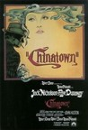
|
105.
Chinatown
Release Date:
June 20, 1974
Jack Nicholson is private-eye Jake Gittes, living off the murky moral climate of sunbaked, pre-war Southern California. Hired by a beautiful socialite to investigate her husband's extramarital affair, Gittes is swept into a maelstrom of double dealings and deadly deceits, uncovering a web of personal and political scandals that come crashing together for one, unforgettable night in Chinatown. (Paramount)
|

|
106.
The Florida Project
Release Date:
October 6, 2017
Six-year-old Moonee (Brooklynn Prince) and her rebellious mother Halley (Bria Vinaite) live week to week at “The Magic Castle,” a budget motel managed by Bobby (Willem Dafoe), whose stern exterior hides a deep reservoir of kindness and compassion. Despite her harsh surroundings, the precocious and ebullient Moonee has no trouble making each day a celebration of life, her endless afternoons overflowing with mischief and grand adventure as she and her ragtag playmates—including Jancey, a new arrival to the area who quickly becomes Moonee’s best friend—fearlessly explore the utterly unique world into which they’ve been thrown. Unbeknownst to Moonee, however, her delicate fantasy is supported by the toil and sacrifice of Halley, who is forced to explore increasingly dangerous possibilities in order to provide for her daughter.
|

|
107.
Timbuktu
Release Date:
January 28, 2015
Not far from Timbuktu, now ruled by the religious fundamentalists, Kidane lives peacefully in the dunes with his wife Satima, his daughter Toya, and Issan, their twelve-year-old shepherd. In town, the people suffer, powerless, from the regime of terror imposed by the Jihadists determined to control their faith. Music, laughter, cigarettes, even soccer have been banned. The women have become shadows but resist with dignity. Every day, the new improvised courts issue tragic and absurd sentences. Kidane and his family are being spared the chaos that prevails in Timbuktu. But their destiny changes when Kidane accidentally kills Amadou, the fisherman who slaughtered his beloved cow. He now has to face the new laws of the foreign occupants.
|

|
108.
Apocalypse Now Redux
Release Date:
August 3, 2001
During the Vietnam War, Captain Willard is sent on a dangerous mission into Cambodia to assassinate a renegade colonel who has set himself up as a god among a local tribe.
|
|
|
109.
Annie Hall
Release Date:
April 20, 1977

Woody Allen portrays a neurotic, highly insecure and indecisive comedy writer who falls head over heels in love with a naive small-town girl who aspires to be a singer. The opening rounds of their relationship involve every romantic cliche. And despite having moved in together, his insecurities get the best of him as he interprets her every move as rejection. While her self-confidence grows, his progressively fades. Can this oddball romance survive?
|

|
110.
The Lord of the Rings: The Fellowship of the Ring
Release Date:
December 19, 2001
An epic adventure of good against evil, a story of the power of friendship and individual courage, and the heroic quest to pave the way for the emergence of mankind, J.R.R. Tolkien's master work brought to cinematic life. [New Line Cinema]
|

|
111.
Leviathan
Release Date:
December 25, 2014
Kolia lives in a small town near the Barents Sea in North Russia. He has his own auto-repair shop. His shop stands right next to the house where he lives with his young wife Lilya and his son from a previous marriage. Vadim Shelevyat, the Mayor of the town, wants to take away his business, his house and his land. First he tries buying off Kolia, but Kolia cannot stand losing everything he has, not only the land, but also all the beauty that has surrounded him from the day of his birth. So Vadim Shelevyat starts being more aggressive.
|

|
112.
The Best Years of Our Lives
Release Date:
December 25, 1946
Three World War II veterans return home to small-town America to discover that they and their families have been irreparably changed.
|

|
113.
Werckmeister Harmonies
Release Date:
October 10, 2001
Based on László Krasznahorkai's novel "The Melancholy of Resistance," this is an uncanny fable about powerlessness and tyranny. Set in a small Hungarian village at a moment of great crisis, a mysterious circus comes to town with a giant whale and news of an appearance by a Prince known for his strange powers. Soon the locals' emotions are stirred to a fever pitch of anticipation. (Anthology Film Archives)
|

|
114.
Toy Story 3
Release Date:
June 18, 2010

Toy Story 3 is a comical new adventure in Disney Digital 3D that lands the toys in a room full of untamed tots who can't wait to get their sticky little fingers on these "new" toys. It's pandemonium as they try to stay together, ensuring "no toy gets left behind." Meanwhile, Barbie comes face to plastic face with Ken (yes, that Ken). [Disney, Pixar]
|
|
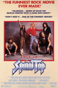
|
115.
This Is Spinal Tap
Release Date:
March 2, 1984
Spinal Tap, one of England's loudest bands, is chronicled by film director Marty DiBergi on what proves to be a fateful tour.
|

|
116.
The Look of Silence
Release Date:
July 17, 2015
The Look of Silence is Joshua Oppenheimer's powerful companion piece to the Oscar®-nominated The Act of Killing. Through Oppenheimer's footage of perpetrators of the 1965 Indonesian genocide, a family of survivors discovers how their son was murdered, as well as the identities of the killers. The documentary focuses on the youngest son, an optometrist named Adi, who decides to break the suffocating spell of submission and terror by doing something unimaginable in a society where the murderers remain in power: he confronts the men who killed his brother and, while testing their eyesight, asks them to accept responsibility for their actions.
|
|
|
117.
Tower
Release Date:
October 12, 2016
August 1, 1966, was the day our innocence was shattered. A sniper rode the elevator to the top floor of the iconic University of Texas Tower and opened fire, holding the campus hostage for 96 minutes in what was a previously unimaginable event. TOWER combines archival footage with rotoscopic animation of the dramatic day, based entirely on first person testimonies from witnesses, heroes and survivors, in a seamless and suspenseful retelling of the unfolding tragedy. The film highlights the fear, confusion, and visceral realities that changed the lives of those present, and the rest of us, forever – a day when the worst in one man brought out the best in so many others.
|

|
118.
The Rider
Release Date:
April 13, 2018
Once a rising star of the rodeo circuit, and a gifted horse trainer, young cowboy Brady is warned that his riding days are over, after a horse crushes his skull at a rodeo. Back home on the Pine Ridge Reservation, with little desire or alternatives for a different way of life, Brady’s sense of inadequacy mounts as he is unable to ride or rodeo – the essentials of being a cowboy. In an attempt to regain control of his own fate, Brady undertakes a search for new identity and what it means to be a man in the heartland of America.
|

|
119.
Moolaadé
Release Date:
October 15, 2004
A rousing polemic directed against the still common African practice of female circumcision, Moolaadé is set in a small African village, where four young girls facing ritual "purification" flee to the household of Collé Ardo Gallo Sy, a strong-willed woman who has managed to shield her own teenage daughter from mutilation. Collé invokes the time-honored custom of moolaadé (sanctuary) to protect the fugitives, and tension mounts as the ensuing stand-off pits Collé against village traditionalists (both male and female) and endangers the prospective marriage of her daughter to the heir-apparent to the tribal throne. [New Yorker Films]
|

|
120.
Atanarjuat: The Fast Runner
Release Date:
June 7, 2002
Evil in the form of an unknown shaman divides a small community of nomadic Inuit, upsetting its balance and spirit. Twenty years pass. Two brothers emerge to challenge the evil order: Amaqjuaq, the Strong One, and Atanarjuat, the Fast Runner. [Lot 47 Films]
|
| 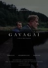 |
121.
Gavagai
Release Date:
August 3, 2018
German businessman Carsten Neuer travels to Norway to finish the impossible translation of some Norwegian poems by Tarjei Vesaas into Chinese, a project of his late wife. He hires Niko, a down-on-his-luck tour guide, to drive him to the poet’s home and places of inspiration to stimulate his own translation. On the road, the ghost of Carsten’s wife appears to him, while Niko struggles with the sudden consequences of his girlfriend’s pregnancy. On this journey, two very different men come to realize the transforming power of love, the limits of language, and the human need for friendship.
|

|
122.
Breaking Away
Release Date:
July 20, 1979
A small-town boy obsessed with the Italian cycling team vies for the affections of a college girl.
|

|
123.
After Life
Release Date:
May 12, 1999
After death, people have just one week to choose only a memory to keep for eternity.
|

|
124.
Cool Hand Luke
Release Date:
November 1, 1967
When Luke Jackson (Paul Newman) is arrested for drunkenly vandalizing parking meters, he is sentenced to serve time on a prison chain gang. Although the warden, guards and prisoners all try to break Luke's spirit upon his arrival, it soon becomes clear that Luke is not about to play by anyone else's rules. He eventually earns the respect of his fellow inmates by refusing to back down in a fight, and he earns their friendship by figuring out a way for them to get their hard labor done in half the time. Luke eventually becomes a symbol of hope and resilience for his fellow prisoners, but the more he becomes revered by the inmates, the more he becomes a symbol of rebelliousness that must be stamped out by the Captain (Strother Martin). [Warner Bros.]
|

|
125.
The African Queen
Release Date:
March 21, 1952
In Africa during World War I, a gin-swilling riverboat captain is persuaded by a strait-laced missionary to use his boat to attack an enemy warship.
|

|
126.
The Triplets of Belleville
Release Date:
November 26, 2003
The story of a boy, his grandmother, his dog and his dream of winning the Tour de France. When the boy is kidnapped by two mysterious men during the race, the search leads to the megalopolis of Belleville and the renowned Triplets of Belleville, eccentric female music-hall stars from the '30s.
|

|
127.
The Queen
Release Date:
September 30, 2006
The Queen takes audiences behind the scenes of one of the most shocking public events of recent times -- providing an illuminating, deeply affecting and dramatic glimpse into what happens in the corridors of power when a tragedy strikes. (Miramax)
|

|
128.
A Bread Factory Part Two: Walk With Me a While
Release Date:
October 26, 2018
At The Bread Factory, they rehearse the Greek play, Hecuba. But the real theatrics are outside the theater where the town has been invaded by bizarre tourists and mysterious tech start-up workers. There is a new normal in Checkford, if it is even really Checkford any longer.
|
129.
The Ladykillers
Release Date:
February 20, 1956
Five diverse oddball criminal types planning a bank robbery rent rooms on a cul-de-sac from an octogenarian widow under the pretext that they are classical musicians.
|
|

|
130.
Young Mr. Lincoln
Release Date:
June 9, 1939
A fictionalized account of the early life of the American president as a young lawyer facing his greatest court case.
|

|
131.
Stories We Tell
Release Date:
May 10, 2013
Director Sarah Polley looks into her past and excavates layers of myth and memory to find the elusive truth at the core of a family of storytellers.
|

|
132.
A Bread Factory Part One: For the Sake of Gold
Release Date:
October 26, 2018
After 40 years of running their community arts space, The Bread Factory, Dorothea and Greta are suddenly fighting for survival when a celebrity couple--performance artists from China--come to Checkford and build an enormous complex down the street catapulting big changes in their small town.
|
|
|
133.
On the Waterfront
Release Date:
July 28, 1954
Marlon Brando gives one of the screen's most electrifying performances as Best Actor in this 1954 Academy Award winning Best Film as Ex-fighter Terry Malloy, who could have been a contender but now toils for boss Johnny Friendly (Lee J. Cobb) on the gang-ridden waterfront. [Sony]
|

|
134.
Jafar Panahi's Taxi
Release Date:
October 2, 2015
Director Jafar Panahi drives a yellow cab through the vibrant streets of Tehran, picking up a diverse group of passengers in a single day. Each man, woman, and child candidly expresses his or her own view of the world, while being interviewed by the curious and gracious driver/director. His camera, placed on the dashboard of his mobile film studio, captures a spirited slice of Iranian society while also brilliantly redefining the borders of comedy, drama and cinema. [Kino Lorber]
|

|
135.
Beau Travail
Release Date:
March 31, 2000
The soldiers of a small French Foreign Legion outpost spend their days practicing drills and exercising. Sergeant Galoup seems to be the perfect Legionnaire: a brooding, young loner who runs his troop efficiently until Sentain, a new recruit, arrives and threatens to upset the balance of his world.
|

|
136.
Do the Right Thing
Release Date:
June 30, 1989
Set on the hottest day of the summer, the film examines various personal, social and economic issues through the eyes of an ensemble of neighborhood characters on a Bedford Stuyvesant block in Brooklyn.
|

|
137.
Waltz with Bashir
Release Date:
December 25, 2008
One night at a bar, an old friend tells director Ari about a recurring nightmare in which he is chased by 26 vicious dogs. Every night, the same number of beasts. The two men conclude that there’s a connection to their Israeli Army mission in the first Lebanon War of the early eighties. Ari is surprised that he can’t remember a thing anymore about that period of his life. Intrigued by this riddle, he decides to meet and interview old friends and comrades around the world. He needs to discover the truth about that time and about himself. As Ari delves deeper and deeper into the mystery, his memory begins to creep up in surreal images. [Sony Classics]
|

|
138.
They Shall Not Grow Old
Release Date:
December 17, 2018
Using state of the art technology to restore original archival footage which is more than a 100-years old, Jackson brings to life the people who can best tell this story: the men who were there. Driven by a personal interest in the First World War, Jackson set out to bring to life the day-to-day experience of its soldiers. After months immersed in the BBC and Imperial War Museums’ archives, narratives and strategies on how to tell this story began to emerge for Jackson. Using the voices of the men involved, the film explores the reality of war on the front line; their attitudes to the conflict; how they ate; slept and formed friendships, as well what their lives were like away from the trenches during their periods of downtime.
|

|
139.
EX LIBRIS: The New York Public Library
Release Date:
September 13, 2017
Frederick Wiseman’s film, EX LIBRIS – The New York Public Library, goes behind the scenes of one of the greatest knowledge institutions of the world. The film reveals the library as a place of welcome, cultural exchange and learning to 18 million patrons and 32 million online visitors annually. There are 92 library branches throughout Manhattan, the Bronx and Staten Island. The NYPL is committed to being a resource for all the inhabitants of this multifaceted and cosmopolitan city. It is accessible, open to everyone and exemplifies the deeply rooted American belief in the individual’s right to know and be informed. The library is one of the most democratic institutions in America—all races, social classes and ethnicities are welcome and are active participants in the life and work of the library. The library strives to inspire learning, advance knowledge and strengthen communities.
|

|
140.
Secrets & Lies
Release Date:
September 27, 1996
A middle-aged London factory worker is shocked when the mixed-race daughter she gave up at birth decides to track her down. At first she denies she is her mother. All family members become emotional, as everyone's secrets are exposed.
|

|
141.
Patton
Release Date:
February 18, 1970
This Academy Award-winning biography of American General George S. Patton chronicles the general's wartime activities and accomplishments, beginning with his entry into the North African campaign and ending with his removal from command after his outspoken criticism of US post-war military strategy.
|

|
142.
The Right Stuff
Release Date:
October 21, 1983
The story of the original Mercury 7 astronauts and their macho, seat-of-the-pants approach to the space program.
|

|
143.
Bambi
Release Date:
August 21, 1942
The story of a young deer growing up in the forest.
|
|
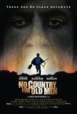
|
144.
No Country for Old Men
Release Date:
November 9, 2007
The time is our own, when rustlers have given way to drug runners and small towns have become free-fire zones. The story begins when Llewelyn Moss finds a pickup truck surrounded by a sentry of dead men. A load of heroin and 2 million dollars in cash are still in the back. When Moss takes the money, he sets off a chain reaction of catastrophic violence that not even the law, in the person of aging, disillusioned Sheriff Bell, can contain. As Moss tries to evade his pursuers--in particular, a mysterious mastermind who flips coins for human lives--the film simultaneously strips down the American crime drama and broadens its concerns to encompass themes as ancient as the Bible and as bloodily contemporary as this morning's headline. (Miramax)
|
|
|
145.
The Gatekeepers
Release Date:
February 1, 2013
A documentary by the Israeli director Dror Moreh which consists of interviews with six surviving former heads of Shin Bet, the Israeli security agency established in 1949 which has engaged in counter-terrorism and intelligence gathering, among other things.
|

|
146.
Nostalgia for the Light
Release Date:
March 18, 2011
Patricio Guzmán travels to Chile’s Atacama Desert where astronomers examine distant galaxies, and women dig for the remains of relatives. [Icarus Films]
|
|
|
147.
Ida
Release Date:
May 2, 2014
Poland, 1962. Anna (Agata Trzebuchowska), an eighteen-year-old novitiate nun is on the verge of taking her vows when she discovers a dark family secret dating back to the years of the Nazi occupation.
|

|
148.
Saving Private Ryan
Release Date:
July 24, 1998
During the WWII D-Day invasion, a squad of soldiers led by Captain John Miller (Tom Hanks) is sent into Normandy to find Private James Ryan (Matt Damon), and return him to his mother in America. She has already lost three other sons in this war.
|

|
149.
After Hours
Release Date:
September 13, 1985
A Manhattan Yuppie's night out becomes a comic nightmare. (Warner Bros.)
|

|
150.
The Favourite
Release Date:
November 23, 2018
Early 18th century. England is at war with the French. Nevertheless, duck racing and pineapple eating are thriving. A frail Queen Anne (Olivia Colman) occupies the throne and her close friend Lady Sarah (Rachel Weisz) governs the country in her stead while tending to Anne’s ill health and mercurial temper. When a new servant Abigail (Emma Stone) arrives, her charm endears her to Sarah. Sarah takes Abigail under her wing and Abigail sees a chance at a return to her aristocratic roots. As the politics of war become quite time consuming for Sarah, Abigail steps into the breach to fill in as the Queen’s companion. Their burgeoning friendship gives her a chance to fulfill her ambitions and she will not let woman, man, politics or rabbit stand in her way. [Fox Searchlight]
|
|
|
151.
The Crying Game
Release Date:
November 25, 1992
A psychological thriller centering on the kidnapping of a British soldier by the IRA.
|

|
152.
Burning
Release Date:
October 26, 2018
The difficult life of Jongsu (Ah-in Yoo), a frustrated introvert, is complicated by the appearance of two people into his orbit: first, Haemi (Jong-seo Jun), a spirited woman who offers romantic possibility, and then, Ben (Steven Yeun), a wealthy and sophisticated young man she returns with from a trip. When Jongsu learns of Ben’s mysterious hobby and Haemi suddenly disappears, his confusion and obsessions begin to mount, culminating in a stunning finale.
|

|
153.
13th
Release Date:
October 7, 2016
The title of Ava DuVernay’s documentary 13th refers to the 13th Amendment to the Constitution, which reads “Neither slavery nor involuntary servitude, except as a punishment for crime whereof the party shall have been duly convicted, shall exist within the United States.” The progression from that second qualifying clause to the horrors of mass criminalization and the sprawling American prison industry is laid out by DuVernay with bracing lucidity. With a potent mixture of archival footage and testimony from a dazzling array of activists, politicians, historians, and formerly incarcerated women and men, DuVernay creates a work of grand historical synthesis.
|

|
154.
Winter's Bone
Release Date:
June 11, 2010
This tense, naturalistic thriller follows 17-year-old Ree Dolly as she confronts the local criminal underworld and the harsh Ozark wilderness in order to to track down her father, who has put up the family homestead for his bail. Featuring a star-making performance by Jennifer Lawrence, Winter's Bone is sure to be one of the most-critically acclaimed films of the year. (Roadside Attractions)
|
|
|
155.
Gett: The Trial of Viviane Amsalem
Release Date:
February 13, 2015
In Israel there is neither civil marriage nor civil divorce. Only rabbis can legitimate a marriage or its dissolution. But this dissolution is only possible with full consent from the husband, who in the end has more power than the judges. Viviane Amsalem (Ronit Elkabetz) has been applying for divorce for three years. But her husband Elisha (Simon Abkarian) will not agree. His cold intransigence, Viviane's determination to fight for her freedom, and the ambiguous role of the judges shape a procedure in which tragedy vies with absurdity, and everything is brought out for judgment, apart from the initial request.
|
|
|
156.
I Called Him Morgan
Release Date:
March 24, 2017
On a snowy night in February 1972, the 33 year old jazz trumpet star Lee Morgan was shot dead by his common-law wife, Helen, during a gig at a club in New York City. The murder sent shockwaves through the jazz community, and the memory of the event still haunts the people who knew the Morgans. Helen served time for the crime and, following her release, retreated into obscurity. Over 20 years later, a chance encounter led her to give a remarkable interview. Helen’s revealing audio “testimony” acts as a refrain throughout the film, which draws together a wealth of archival photographs and footage, notable talking heads and incredible jazz music to tell the ill-fated pair’s story.
|
| 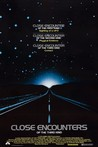 |
157.
Close Encounters of the Third Kind
Release Date:
November 16, 1977
Power repairman Roy Neary (Richard Dreyfuss) has an extraordinary encounter with a strange spacecraft while out on a call. Recurring visions of a mountain fuel an increasing obsession that drives him to an emotional breaking point. Desperate to understand what he has experienced, he finds an ally in Jillian (Melinda Dillon), a single mother who believes her son has been abducted by the aliens. Meanwhile an international group of scientists led by French expert Claude Lacombe (Francois Truffaut) search for a breakthrough in human-alien communication. Their collective quest culminates in a remote Wyoming rendezvous and an event of unequalled importance in all of human history. [Sony Pictures]
|

|
158.
Son of Saul
Release Date:
December 18, 2015
October 1944, Auschwitz-Birkenau. Saul Ausländer is a Hungarian member of the Sonderkommando, the group of Jewish prisoners isolated from the camp and forced to assist the Nazis in the machinery of large-scale extermination. While working in one of the crematoriums, Saul discovers the corpse of a boy he takes for his son. As the Sonderkommando plans a rebellion, Saul decides to carry out an impossible task: save the child’s body from the flames, find a rabbi to recite the mourner’s Kaddish and offer the boy a proper burial.
|
|
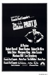
|
159.
The Godfather: Part II
Release Date:
December 12, 1974
The sequel to "The Godfather" continues the saga of two generations of successive power within the Corleone family. Coppola tells two stories in Part II: the roots and rise of a young Don Vito, played with uncanny ability by Robert De Niro, and the ascension of Michael (Al Pacino) as the new Don. [Paramount Pictures]
|
|
|
160.
L.A. Confidential
Release Date:
September 19, 1997
Based on James Ellroy's novel about the movie industry, corrupt cops, tabloid journalism, gangsters and sexual obsessions of every stripe, L.A. Confidential is set in 1950's Los Angeles.
|
|
|
161.
Bloody Sunday
Release Date:
October 4, 2002
This controversial and critically acclaimed film depicts the events of January 30, 1972, when 27 civilians were shot by the British army during a peaceful civil rights march. The event fueled a 25-year cycle of violence between Britain and elements of Ireland, North and South. (Paramount Classics)
|

|
162.
My Voyage to Italy
Release Date:
October 19, 2001
A four-hour odyssey through the history of Italian cinema and its influences on Scorsese's work.
|

|
163.
Apollo 11
Release Date:
March 1, 2019
From director Todd Douglas Miller (Dinosaur 13) comes a cinematic event fifty years in the making. Crafted from a newly discovered trove of 65mm footage, and more than 11,000 hours of uncatalogued audio recordings, Apollo 11 takes us straight to the heart of NASA’s most celebrated mission—the one that first put men on the moon, and forever made Neil Armstrong and Buzz Aldrin into household names. Immersed in the perspectives of the astronauts, the team in Mission Control, and the millions of spectators on the ground, we vividly experience those momentous days and hours in 1969 when humankind took a giant leap into the future.
|

|
164.
Her
Release Date:
December 18, 2013
Set in the Los Angeles of the slight future, Her follows Theodore Twombly, a complex, soulful man who makes his living writing touching, personal letters for other people. Heartbroken after the end of a long relationship, he becomes intrigued with a new, advanced operating system, which promises to be an intuitive entity in its own right, individual to each user. Upon initiating it, he is delighted to meet "Samantha," a bright, female voice, who is insightful, sensitive and surprisingly funny. As her needs and desires grow, in tandem with his own, their friendship deepens into an eventual love for each other. [Warner Bros.]
|

|
165.
The Sweet Hereafter
Release Date:
November 21, 1997
On a winter's day, in the small rural community of Sam Dent, British Columbia, a school bus inexplicably crashes into a frozen lake, taking the lives of fourteen children and injuring many others. Shortly thereafter, Mitchell Stephens (Holm), a big city lawyer, comes to the community with promises to compensate its citizens for their loss. (Fine Line Films)
|

|
166.
Paths of the Soul
Release Date:
May 13, 2016
Filmmaker Zhang Yang (Shower, Getting Home) blurs the border between documentary and fiction to follow a group of Tibetan villagers who leave their families and homes in the small village of Nyima to make a Buddhist "bowing pilgrimage"-laying their bodies flat on the ground after every few steps-along the 1,200 mile road to Lhasa, the holy capital of Tibet. Though united in their remarkable devotion, each of the travelers embarks on this near impossible journey for very personal reasons. One traveler needs to expunge bad family karma, a butcher wants to cleanse animal bloodstains from his soul, another nearing his life's end, hopes that the prostrations will break the chain of cause and effect determined by his life's actions. [Icarus Films]
|
| 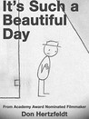 |
167.
It's Such a Beautiful Day
Release Date:
October 5, 2012
Bill struggles to put together his shattered psyche, in this new feature film version of Don Hertzfeldt's animated short film trilogy.
|

|
168.
My Perestroika
Release Date:
March 23, 2011
My Perestroika follows five ordinary Russians living in extraordinary times — from their sheltered Soviet childhood, to the collapse of the Soviet Union during their teenage years, to the constantly shifting political landscape of post-Soviet Russia. Together, these childhood classmates paint a complex picture of the dreams and disillusionment of those raised behind the Iron Curtain. (Red Square Productions)
|
|
|
169.
This Is Not a Film
Release Date:
March 2, 2012
This clandestine documentary, shot partially on an iPhone and smuggled into France in a cake for a last-minute submission to Cannes, depicts the day-to-day life of acclaimed director Jafar Panahi during his house arrest in his Tehran apartment. While appealing his sentence – six years in prison and a 20 year ban from filmmaking – Panahi is seen talking to his family and lawyer on the phone, discussing his
plight with Mirtahmasb and reflecting on the meaning of the art of filmmaking. (Palisades Tartan)
|

|
170.
Finding Nemo
Release Date:
May 30, 2003
This visually stunning underwater adventure follows the comedic and eventful journeys of two fish - a father and his son Nemo - who become separated in the Great Barrier Reef. [Disney/Pixar]
|
|
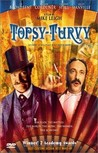
|
171.
Topsy-Turvy
Release Date:
December 17, 1999
When their latest play fails and they threaten to disband, Gilbert and Sullivan are inspired to create their masterpiece, "The Mikado."
|

|
172.
King Kong
Release Date:
April 7, 1933
A film crew travels to a tropical island for an exotic location shoot and discovers a colossal ape who falls for their blonde starlet. He is then captured and transported back to New York City for public exhibition.
|
|
|
173.
The Incredibles
Release Date:
November 5, 2004
Known to the world as superheroes Mr. Incredible and Elastigirl, Bob Parr and his wife Helen were among the world's greatest crime fighters, saving lives and battling evil on a daily basis. Fifteen years later, they have been forced to adopt civilian identities and retreat to the suburbs to live "normal" lives with their three kids, Violet, Dash and Jack-Jack. Itching to get back into action, Bob gets his chance when a mysterious communication summons him to a remote island for a top secret assignment. [Disney]
|

|
174.
Before Sunset
Release Date:
July 2, 2004
The timeless romantic story of two questing hearts and minds whose powerful bond defies time and place. [Warner Independent Pictures]
|

|
175.
Being John Malkovich
Release Date:
October 29, 1999
An out-of-work puppeteer takes a filing clerk job on the cramped 7 ½ floor of an office building where he discovers a hidden tunnel allowing him to enter the mind and life of actor John Malkovich for 15 mintues before being ejected onto the New Jersey Turnpike.
|
|
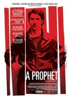
|
176.
A Prophet
Release Date:
February 26, 2010
Condemned to six years in prison, Malik El Djebena cannot read or write. Arriving at the jail entirely alone, he appears younger and more fragile than the other convicts. He is 19 years old. Cornered by the leader of the Corsican gang who rules the prison, he is given a number of "missions" to carry out, toughening him up and gaining the gang leader's confidence in the process. But Malik is brave and a fast learner, daring to secretly develop his own plans. (Sony Pictures Classics)
|
177.
Hard to Be a God
Release Date:
January 30, 2015
A group of research scientists has been sent to the planet Arkanar, living under an oppressed regime in a period equivalent to earth’s Middle Ages. The local population is suffering a ban issued on anyone who knows how to read and write. The scientists must refrain from influencing political and historical events on Arkanar. They must work incognito, and they must remain neutral. Don Rumata, recognized by the locals as a sort of futuristic god, tries to save the local intelligentsia from their punishment. He cannot avoid taking the stance: “What would you do in God’s place?” [Kino Lorber]
|
|

|
178.
Almost Famous
Release Date:
September 13, 2000
In the 1970's, a high school boy (Fugit) is given an opportunity to follow and write a story about the hot new rock band Stillwater (with lead guitarist Crudup) as they tour the USA.
|

|
179.
Phantom Thread
Release Date:
December 25, 2017
Set in the glamour of 1950s post-war London, renowned dressmaker Reynolds Woodcock (Daniel Day-Lewis) and his sister Cyril (Lesley Manville) are at the center of British fashion, dressing royalty, movie stars, heiresses, socialites, debutantes and dames with the distinct style of The House of Woodcock. Women come and go through Woodcock’s life, providing the confirmed bachelor with inspiration and companionship, until he comes across a young, strong-willed woman, Alma (Vicky Krieps), who soon becomes a fixture in his life as his muse and lover. Once controlled and planned, he finds his carefully tailored life disrupted by love.
|

|
180.
Cold War
Release Date:
December 21, 2018
Cold War is a passionate love story between a man and a woman who meet in the ruins of post-war Poland. With vastly different backgrounds and temperaments, they are fatefully mismatched and yet condemned to each other. Set against the background of the Cold War in 1950s Poland, Berlin, Yugoslavia and Paris, it’s the tale of a couple separated by politics, character flaws and unfortunate twists of fate — an impossible love story in impossible times. [Amazon Studios]
|

|
181.
Big Men
Release Date:
March 14, 2014
Big Men looks at the corruption in the oil industries of Ghana and Nigeria.
|

|
182.
American Splendor
Release Date:
August 15, 2003
The true saga of a working-class Everyman who pursues self-expression without self-censorship -- and finds a grateful audience, critical admiration, and that most remarkable of happy endings, a loving family. (Fine Line Features)
|

|
183.
Hannah and Her Sisters
Release Date:
February 1, 1986
A comic look at the relationships among three sisters and their various romantic interests.
|

|
184.
The Circus
Release Date:
January 1, 1929
The Tramp finds work and the girl of his dreams at a circus.
|

|
185.
Eighth Grade
Release Date:
July 13, 2018
Thirteen-year-old Kayla endures the tidal wave of contemporary suburban adolescence as she makes her way through the last week of middle school—the end of her thus far disastrous eighth grade year—before she begins high school.
|
|
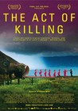
|
186.
The Act of Killing
Release Date:
July 19, 2013
A documentary in which former Indonesian death squad leaders reenact their real-life mass-killings in various cinematic genres.
|

|
187.
The Tale
Release Date:
May 26, 2018
Jennifer Fox (Laura Dern) faces a host of life-altering questions after a short story from her middle school days forces her to re-examine her first sexual relationship and the stories we tell ourselves in order to survive.
|

|
188.
Gosford Park
Release Date:
December 26, 2001
This ensemble murder mystery satire, set in 1930's England, revolves around an elegant hunting party weekend at a country estate, featuring an aristocratic family and their friends.
|

|
189.
Dirty Harry
Release Date:
December 23, 1971
When an individual known as 'the Scorpio Killer' menaces the city, tough as nails San Francisco Police Inspector Harry Callahan (Eastwoood) is assigned to track down and deal with the psychopath. "Iknowwhatyou're thinking. Did he fire six shots or only five? Well, to tell you the truth, in all this excitement, I've kinda lost track myself. But being as this is a 44 Magnum, the most powerful handgun in the world, and would blow your head clean off, you've only got to ask yourself one question: 'Do I feel lucky?' Well, do ya punk?"
|

|
190.
The Fits
Release Date:
June 3, 2016
Toni trains as a boxer with her brother at a community center in Cincinnati’s West End, but becomes fascinated by the dance team that also practices there. Enamored by their strength and confidence, Toni eventually joins the group, eagerly absorbing routines, mastering drills, and even piercing her own ears to fit in. As she discovers the joys of dance and of female camaraderie, she grapples with her individual identity amid her newly defined social sphere. Shortly after Toni joins the team, the captain faints during practice. By the end of the week, most of the girls on the team suffer from episodes of fainting, swooning, moaning, and shaking in a seemingly uncontrollable catharsis. Soon, however, the girls on the team embrace these mysterious spasms, transforming them into a rite of passage. Toni fears “the fits” but is equally afraid of losing her place just as she’s found her footing. Caught between her need for control and her desire for acceptance, Toni must decide how far she will go to embody her new ideals. [Oscilloscope]
|

|
191.
United 93
Release Date:
April 28, 2006
Acclaimed filmmaker Paul Greengrass writes and directs an unflinching drama that tells the story of the passengers and crew, their families on the ground and the flight controllers who watched in dawning horror as United Flight 93 became the fourth hijacked plane on the day of the worst terrorist attacks on American soil: September 11, 2001. (Universal Pictures)
|

|
192.
Mad Max: Fury Road
Release Date:
May 15, 2015
In the furthest reaches of our planet, in a stark desert landscape where humanity is broken, and everyone is fighting for the necessities of life, there are two rebels who just might be able to restore order—Max (Tom Hardy), a man of action and few words, who seeks peace of mind following the loss of his wife and child in the aftermath of the chaos, and Furiosa (Charlize Theron), a woman of action who believes her path to survival may be achieved if she can make it across the desert back to her childhood homeland.
|

|
193.
Downhill Racer
Release Date:
November 7, 1969
Quietly cocky David Chappellet (Robert Redford) joins the U.S. ski team as downhill racer and clashes with the team's coach, played by Gene Hackman.
|

|
194.
Capturing the Friedmans
Release Date:
May 30, 2003
The Friedmans are a seemingly typical, upper-middle-class Jewish family whose world is instantly transformed when the father and his youngest son are arrested and charged with shocking and horrible crimes.
|
|
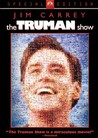
|
195.
The Truman Show
Release Date:
June 5, 1998
Twenty-nine years ago, a baby boy was adopted by the OmniCam Corporation to become the subject of the most popular television show of all time. His name is Truman Burbank. (Paramount Pictures)
|
|
|
196.
American Hustle
Release Date:
December 13, 2013
A fictional film set in the alluring world of one of the most stunning scandals to rock our nation, American Hustle tells the story of con man Irving Rosenfeld (Christian Bale), who along with his equally cunning and seductive partner Sydney Prosser (Amy Adams) is forced to work for a wild FBI agent Richie DiMaso (Bradley Cooper). DiMaso pushes them into a world of Jersey powerbrokers and mafia that's as dangerous as it is enchanting. Caught between the con-artists and Feds is Carmine Polito (Jeremy Renner), the passionate, volatile, New Jersey political operator, but it's Irving's unpredictable wife Rosalyn (Jennifer Lawrence) who could be the one to pull the thread that brings the entire world crashing down. [Sony Pictures]
|

|
197.
Paterson
Release Date:
December 28, 2016
Paterson (Adam Driver) is a bus driver in the city of Paterson, New Jersey – they share the name. Every day, Paterson adheres to a simple routine: he drives his daily route, observing the city as it drifts across his windshield and overhearing fragments of conversation swirling around him; he writes poetry into a notebook; he walks his dog; he stops in a bar and drinks exactly one beer; he goes home to his wife, Laura (Golshifteh Farahani). By contrast, Laura's world is ever changing. New dreams come to her almost daily. Paterson loves Laura and she loves him. He supports her newfound ambitions; she champions his gift for poetry.
|
|
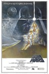
|
198.
Star Wars: Episode IV - A New Hope
Release Date:
May 25, 1977
A long time ago in a galaxy far, far away... Princess Leia (Carrie Fisher) is held hostage by the evil Imperial forces in their effort to quell the rebellion against the Galactic Empire. Luke Skywalker (Mark Hamill) and Captain Han Solo (Harrison Ford) team together with the lovable droid duo, R2-D2 and C-3PO, to rescue the beautiful princess and restore justice in the galaxy. [20th Century Fox]
|

|
199.
Persepolis
Release Date:
December 25, 2007
Persepolis is the poignant story of a young girl in Iran during the Islamic Revolution. It is through the eyes of the precocious and outspoken 9-year-old Marjane that we see a people's hopes dashed as fundamentalists take power--forcing the veil on women and imprisoning thousands. Clever and fearless, Marjane outsmarts the "social guardians" and discovers punk, ABBA, and Iron Maiden. Yet when her uncle is senselessly executed and as bombs fall around Tehran in the Iran/Iraq war, the daily fear that permeates life in Iran is palpable. [Sony Classics]
|

|
200.
The Age of Innocence
Release Date:
September 17, 1993
Daniel Day-Lewis and Michelle Pfeiffer star in a ravishing romance about three wealthy 1870s New Yorkers caught in a tragic love triangle. (Sony)
|